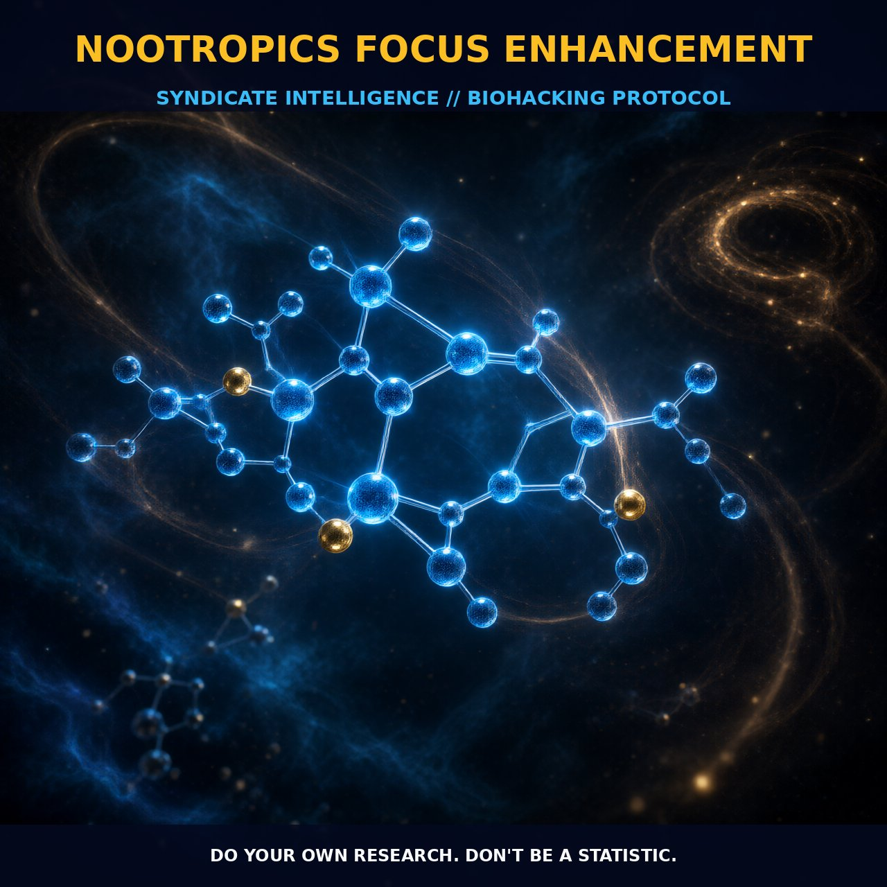

Optimizing Cognitive Focus with Nootropics

1. The Mechanism
Nootropics are a diverse class of substances designed to enhance brain function, particularly in areas such as focus, memory, and cognitive performance. These compounds can be natural or synthetic, and their mechanisms of action vary widely. For instance, some nootropics work by modulating neurotransmitter levels, while others target specific receptors or pathways within the brain. The primary goal of nootropics is to improve cognitive processes by enhancing neural communication and increasing the efficiency of brain function.
Caffeine is one of the most well-known nootropics, widely used to increase focus and alertness. It works by blocking adenosine receptors, which are responsible for the feeling of tiredness. By inhibiting adenosine, caffeine increases the activity of neurotransmitters such as dopamine and norepinephrine, leading to enhanced cognitive performance and improved focus.
Racetams, such as piracetam, and choline supplements, such as alpha-GPC, act on cholinergic pathways, enhancing the availability of acetylcholine, a key neurotransmitter involved in memory formation and cognitive processes. Racetams are known to improve the function of the NMDA (N-methyl-D-aspartate) receptor, crucial for learning and memory. By enhancing the activity of this receptor, racetams boost synaptic plasticity and neural communication, leading to improved cognitive function.
L-theanine, often paired with caffeine, works by increasing the release of GABA, an inhibitory neurotransmitter that promotes relaxation and focus without causing drowsiness. Additionally, nootropics like vinpocetine, derived from the periwinkle plant, increase cerebral blood flow and improve oxygen utilization in brain cells, contributing to better neural health and improved cognitive performance.
2. Biological Leverage
The biological leverage of nootropics lies in their ability to modulate various neurotransmitter systems and neural pathways. For instance, racetams improve the function of the NMDA receptor, crucial for learning and memory. By enhancing the activity of this receptor, racetams boost synaptic plasticity and neural communication, leading to improved cognitive function.
L-theanine, often paired with caffeine, works by increasing the release of GABA, an inhibitory neurotransmitter that promotes relaxation and focus without causing drowsiness. Moreover, nootropics can support cognitive function by enhancing blood flow and oxygen supply to the brain. Vinpocetine, derived from the periwinkle plant, increases cerebral blood flow and improves oxygen utilization in brain cells, contributing to better neural health and improved cognitive performance.
The synergistic effects of combining different nootropics can provide a comprehensive enhancement of various cognitive processes. For example, combining a cholinergic nootropic like alpha-GPC with a glutamatergic nootropic like piracetam can provide a robust boost to both memory and focus.
3. Tactical Implementation
To effectively implement nootropics for focus enhancement, it is crucial to understand the optimal dosing and timing for each compound. For instance, caffeine is typically consumed in doses ranging from 50 to 200 milligrams, with the optimal dose varying among individuals. Consuming caffeine early in the day, before peak cognitive tasks, can provide a sustained boost in focus and alertness.
Racetams like piracetam are often taken in doses ranging from 800 to 1600 milligrams, with multiple doses spread throughout the day for sustained effects. Stacking nootropics can enhance their efficacy. A common stack might include caffeine for alertness, piracetam for cognitive enhancement, and L-theanine for balanced focus. This combination can provide a synergistic boost to cognitive processes, with the caffeine enhancing neurotransmitter activity, the piracetam improving neural communication, and the L-theanine promoting relaxation and focus without causing drowsiness.
Incorporating choline supplements like alpha-GPC can further support cognitive function by providing the raw materials for acetylcholine synthesis. It is important to note that individual responses to nootropics can vary, and it may take some experimentation to find the optimal combination and dosage for each person. Starting with low-to-moderate amounts and gradually increasing the dosage can help identify the most effective regimen while minimizing potential side effects.
Maintaining a healthy lifestyle with proper sleep, exercise, and diet can further enhance the cognitive benefits of nootropics.
Prostar Life Hack
Start with a combination of caffeine for alertness, piracetam for cognitive enhancement, and L-theanine for balanced focus. This stack provides a synergistic boost to cognitive processes, enhancing neurotransmitter activity and promoting relaxation and focus without causing drowsiness.
[ AUTHOR: LEAD TECHNICAL RESEARCHER ]